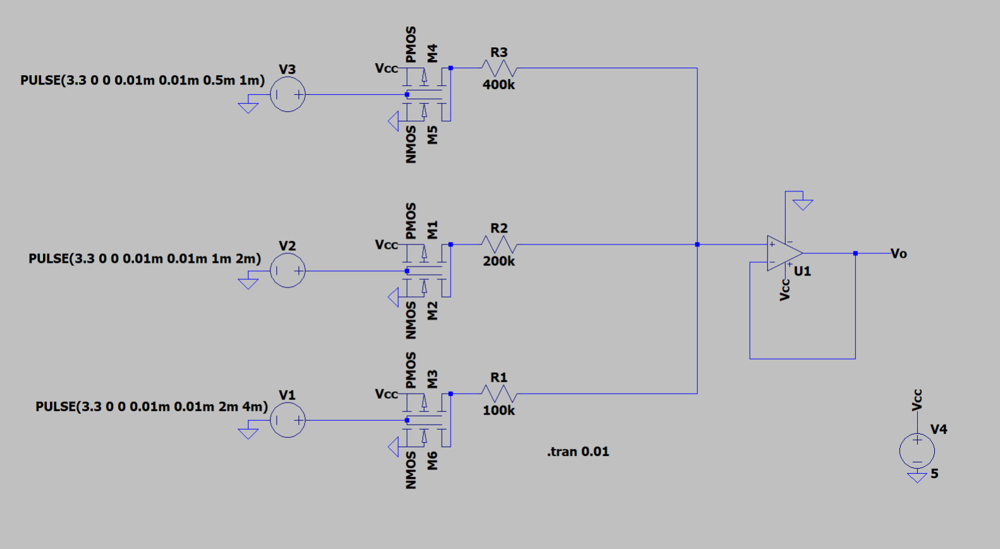

Project Overview
The goal of Project 5 was to design, simulate, and build a 3-bit Digital-to-Analog Converter (DAC) with a full-scale output of 5 V. Three digital input bits feed a weighted resistor network, and the resulting analog voltage is buffered by a unity-gain op-amp stage.
Each bit’s weight is set by R_REF = 100 kΩ:
- R1 = 100 kΩ (LSB)
- R2 = 200 kΩ
- R3 = 400 kΩ
MOSFET switches ensure input lines draw < 1 µA. The final circuit produces an output voltage proportional to the binary input, buffered to prevent loading.
